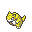

Attacke
Intensität
Boden Physisch17 Pokémon
Physisch17 Pokémon
Ein erdbebenartiger Angriff von zufälliger Stärke.
Werte
- Typ
- Boden
- Kategorie
- Physisch
- Stärke
- —
- Genauigkeit
- 100 %
- AP
- 30
- Ziel
- Alle anderen Pokémon auf dem Feld
Durch Level-Aufstieg
Diese Pokémon lernen die Attacke auf dem angegebenen Level.

#027SandanBodenLv. 14 #028SandamerBodenLv. 14
#028SandamerBodenLv. 14 #050DigdaBodenLv. 14
#050DigdaBodenLv. 14 #051DigdriBodenLv. 14
#051DigdriBodenLv. 14 #074KleinsteinGesteinBodenLv. 12
#074KleinsteinGesteinBodenLv. 12 #075GeorokGesteinBodenLv. 12
#075GeorokGesteinBodenLv. 12 #076GeowazGesteinBodenLv. 12
#076GeowazGesteinBodenLv. 12 #232DonphanBodenLv. 30
#232DonphanBodenLv. 30 #247PupitarGesteinBodenLv. 38
#247PupitarGesteinBodenLv. 38 #322CamaubFeuerBodenLv. 12
#322CamaubFeuerBodenLv. 12 #323CameruptFeuerBodenLv. 12
#323CameruptFeuerBodenLv. 12 #339SchmerbeWasserBodenLv. 20
#339SchmerbeWasserBodenLv. 20 #340WelsarWasserBodenLv. 20
#340WelsarWasserBodenLv. 20
Als Ei-Attacke
Diese Pokémon können die Attacke von einem Elternteil erben.